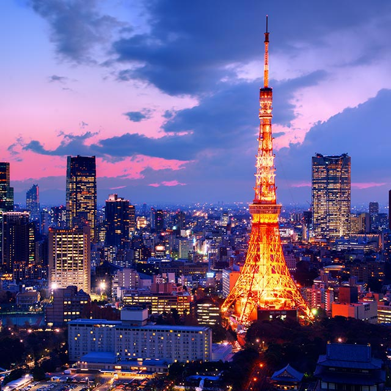
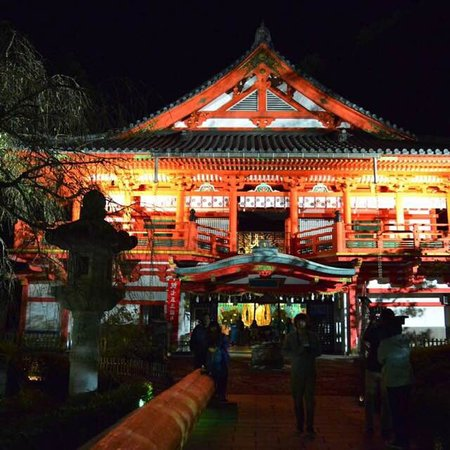
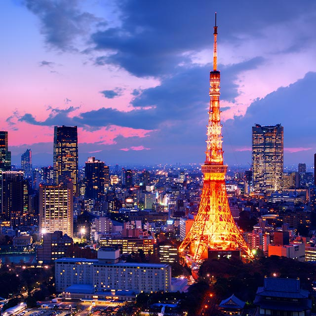
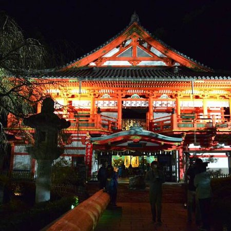

This video is about japan and it's beauty in the culture. Japan, is an island in the East Asia. It's located in the Pacific Ocean, and can be found in to the east of China, Korea and Russia. Japan's famous locations are Asahikawa, sapporo and tokyo and okinawa. Japan’s highest peak Mount Fuji also know by many people, is a volcano. The capital city Tokyo and several surrounding prefectures, is the largest population area in the world, with over 30 million citizens.
MAP OF JAPAN
Asahikawa - Asahikawa is a city on northern Japan's Hokkaido island. To the east, a cable car runs up Mount Asahi, location of the Asahiyama Zoo with its polar bears, penguins and orangutans.
sapporo - Sapporo, capital of the mountainous northern Japanese island of Hokkaido, is famous for its beer, skiing and annual Sapporo Snow Festival featuring enormous ice sculptures.
sendai - Sendai is a city in Japan’s Tohoku Region, northeast of Tokyo on Honshu island. The remains of 17th-century Sendai Castle, built for samurai lord Date Masamune on Aoba Hill, overlook the city and include a museum of historic artifacts.
tokyo - Tokyo, Japan’s busy capital, mixes the ultramodern and the traditional, from neon-lit skyscrapers to historic temples.
komatsu - Komatsu is a city located in Ishikawa Prefecture, Japan. As of 1 March 2018, the city had an estimated population of 108,509 in 42664 households, and a population density of 290 persons per km².
nagoya - Nagoya, capital of Japan’s Aichi Prefecture, is a manufacturing and shipping hub in central Honshu.
hiroshima - Hiroshima, a modern city on Japan’s Honshu Island, was largely destroyed by an atomic bomb during World War II. Today, Hiroshima Peace Memorial Park commemorates the 1945 event.
takamatsu - Takamatsu is a port city on Japan’s Shikoku Island. It’s known for the sprawling Ritsurin Garden, with a teahouse, koi ponds, landscaped hills and pine forests.
fukuoka - Fukuoka, capital of Fukuoka Prefecture, sits on the northern shore of Japan’s Kyushu Island. It’s known for ancient temples, beaches and modern shopping malls, including Canal City.
nagasaki - Nagasaki is a Japanese city on the northwest coast of the island of Kyushu. It’s set on a large natural harbor, with buildings on the terraces of surrounding hills.
okinawa - Okinawa is a Japanese prefecture comprising more than 150 islands in the East China Sea between Taiwan and Japan's mainland.
kagoshima - Kagoshima, a seaside city on Japan's Kyushu Island, is the capital of Kagoshima Prefecture. It's best known for Sakurajima, an active volcano that faces Kinko Bay.


.png)

 


